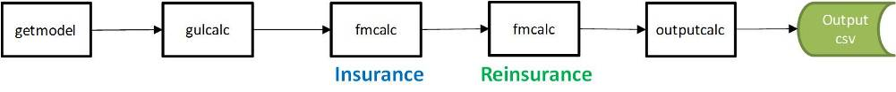
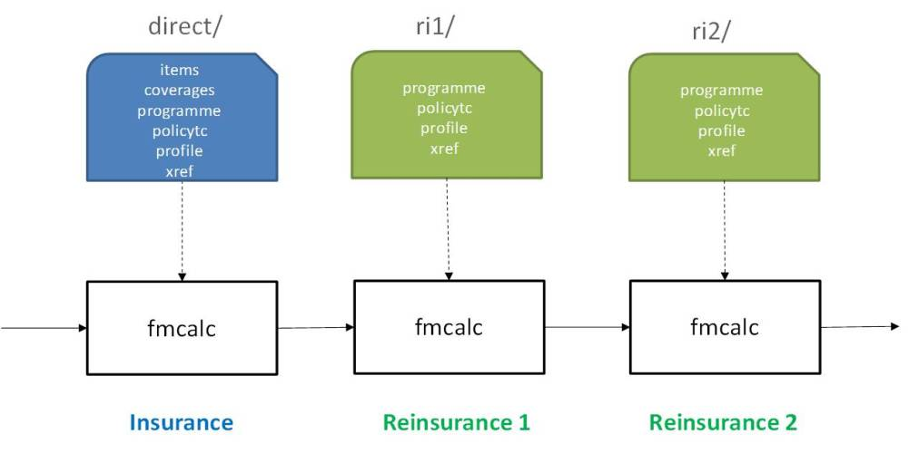

ktools is capable of multiple output workflows. This brings much greater flexibility, but also more complexity for users of the toolkit.
This section presents some example workflows, starting with single output workflows and then moving onto more complex multi-output workflows. There are some python scripts provided which execute some of the illustrative workflows using the example data in the repository. It is assumed that workflows will generally be run across multiple processes, with the number of processes being specified by the user.
In this example, the core workflow is run through fmcalc into summarycalc and then the losses are summarized by summary set 2, which is "portfolio" summary level. This produces multiple output files when run with multiple processes, each containing a subset of the event set. The output files can be concatinated together at the end.
eve 1 2 | getmodel | gulcalc -r -S100 -i - | fmcalc | summarycalc -f -2 - | eltcalc > elt_p1.csv
eve 2 2 | getmodel | gulcalc -r -S100 -i - | fmcalc | summarycalc -f -2 - | eltcalc > elt_p2.csv

See example script eltcalc_example.py
This is very similar to the first example, except the summary samples are run through pltcalc instead. The output files can be concatinated together at the end.
eve 1 2 | getmodel | gulcalc -r -S100 -i - | fmcalc | summarycalc -f -2 - | pltcalc > plt_p1.csv
eve 2 2 | getmodel | gulcalc -r -S100 -i - | fmcalc | summarycalc -f -2 - | pltcalc > plt_p2.csv

See example script pltcalc_example.py
In this example, the summary samples are calculated as in the first two examples, but the results are output to the work folder. Until this stage the calculation is run over multiple processes. Then, in a single process, leccalc reads the summarycalc binaries from the work folder and computes two loss exceedance curves in a single process. Note that you can output all eight loss exceedance curve variants in a single leccalc command.
eve 1 2 | getmodel | gulcalc -r -S100 -i - | fmcalc | summarycalc -f -2 - > work/summary2/p1.bin
eve 2 2 | getmodel | gulcalc -r -S100 -i - | fmcalc | summarycalc -f -2 - > work/summary2/p1.bin
leccalc -Ksummary2 -F lec_full_uncertainty_agg.csv -f lec_full_uncertainty_occ.csv

See example script leccalc_example.py
Similarly to lec curves, the samples are run through to summarycalc, and the summarycalc binaries are output to the work folder. Until this stage the calculation is run over multiple processes. Then, in a single process, aalcalc reads the summarycalc binaries from the work folder and computes the aal output.
eve 1 2 | getmodel | gulcalc -r -S100 -i - | fmcalc | summarycalc -f -2 work/summary2/p1.bin
eve 2 2 | getmodel | gulcalc -r -S100 -i - | fmcalc | summarycalc -f -2 work/summary2/p2.bin
aalcalc -Ksummary2 > aal.csv

See example script aalcalc_example.py
gulcalc can generate two output streams at once: item level samples to pipe into fmcalc, and coverage level samples to pipe into summarycalc. This means that outputs for both ground up loss and insured loss can be generated in one workflow.
This is done by writing one stream to a file or named pipe, while streaming the other to standard output down the pipeline.
eve 1 2 | getmodel | gulcalc -r -S100 -i gulcalci1.bin -c - | summarycalc -g -2 - | eltcalc > gul_elt_p1.csv
eve 2 2 | getmodel | gulcalc -r -S100 -i gulcalci2.bin -c - | summarycalc -g -2 - | eltcalc > gul_elt_p2.csv
fmcalc < gulcalci1.bin | summarycalc -f -2 - | eltcalc > fm_elt_p1.csv
fmcalc < gulcalci2.bin | summarycalc -f -2 - | eltcalc > fm_elt_p2.csv
Note that the gulcalc item stream does not need to be written off to disk, as it can be sent to a 'named pipe', which keeps the data in-memory and kicks off a new process. This is easy to do in Linux (but harder in Windows).
Figure 5 illustrates an example workflow.

See example script gulandfm_example.py
Summarycalc is capable of summarizing samples to up to 10 different user-defined levels for ground up loss and insured loss. This means that different outputs can be run on different summary levels. In this example, event loss tables for two different summary levels are generated.
eve 1 2 | getmodel | gulcalc -r -S100 -i - | fmcalc | summarycalc -f -1 s1/p1.bin -2 s2/p1.bin
eve 2 2 | getmodel | gulcalc -r -S100 -i - | fmcalc | summarycalc -f -1 s1/p2.bin -2 s2/p2.bin
eltcalc < s1/p1.bin > elt_s1_p1.csv
eltcalc < s1/p2.bin > elt_s1_p2.csv
eltcalc < s2/p1.bin > elt_s2_p1.csv
eltcalc < s2/p2.bin > elt_s2_p2.csv
Again, the summarycalc streams can be sent to named pipes rather than written off to disk.
Figure 6 illustrates multiple summary level streams, each of which can go to different output calculations.

The fmcalc component can be used recursively in order to apply multiple sets of policy terms and conditions, in order to support reinsurance. Figure 7 shows a simple example workflow of a direct insurance calculation followed by a reinsurance calculation.
eve 1 2 | getmodel | gulcalc -r -S100 -i - | fmcalc -p direct | fmcalc -p ri1 -n > fmcalc_1.bin
eve 2 2 | getmodel | gulcalc -r -S100 -i - | fmcalc -p direct | fmcalc -p ri1 -n > fmcalc_2.bin

Each call of fmcalc requires the same input files, so it is necessary to specify the location of the files for each call using the command line parameter -p and the relative folder path. Figure 8 demonstrates the required files for three consecutive calls of fmcalc.

It is possible to generate all of the outputs for each call of fmcalc in the same workflow, enabling multiple financial perspective reports, as shown in Figure 9.